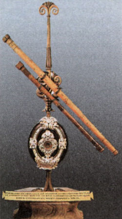
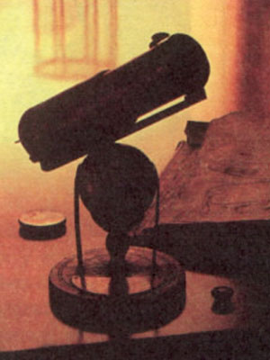
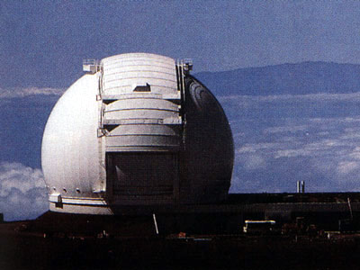

Навигация
Юный астроном
Главная
Планеты Солнечной системы
Созвездия
Астрономы
История телескопов
Черные дыры
История телескопов

Телескоп Галилея
Первый телескоп был построен в 1609 году итальянским астрономом Галилео Галилеем. Телескоп имел скромные размеры (длина трубы 1245 мм, диаметр объектива 53 мм, окуляр 25 диоптрий), несовершенную оптическую схему и 30-кратное увеличение. Он позволил сделать целую серию замечательных открытий (фазы Венеры, горы на Луне, спутники Юпитера, пятна на Солнце, звезды в Млечном Пути).
Очень плохое качество изображения в первых телескопах заставило оптиков искать пути решения этой проблемы. Оказалось, что увеличение фокусного расстояния объектива значительно улучшает качество изображения.
Телескоп Гевелия имел длину 50 м и подвешивался системой канатов на столбе.
Телескоп Озу имел длину 98 метров. При этом он не имел трубы, объектив располагался на столбе на расстоянии почти 100 метров от окуляра, который наблюдатель держал в руках (так называемый воздушный телескоп). Наблюдать с таким телескопом было очень неудобно. Озу не сделал ни одного открытия. Христиан Гюйгенс, наблюдая в 64-метровый воздушный телескоп, открыл кольцо Сатурна и его спутник – Титан, а также заметил полосы на диске Юпитера. Другой крупный астроном того времени, Жан Кассини, с помощью воздушных телескопов открыл еще четыре спутника Сатурна (Япет, Рея, Диона, Тефия), щель в кольце Сатурна (щель Кассини), «моря» и полярные шапки на Марсе. В 1663 году Грегори создал новую схему телескопа-рефлектора. Грегори первым предложил использовать в телескопе вместо линзы зеркало. Основная аберрация линзовых объективов – хроматическая – полностью отсутствует в зеркальном телескопе.
Первый телескоп-рефлектор был построен Исааком Ньютоном в 1668 году. Схема, по которой он был построен, получила название «схема Ньютона». Длина телескопа составляла 15 см.

Первый в мире телескоп-рефлектор
1672 году Кассегрен предложил схему двухзеркальной системы, вскоре ставшую наиболее популярной. Первое зеркало было параболическим, второе имело форму выпуклого гиперболоида и располагалось перед фокусом первого.
В настоящее время практически все телескопы являются зеркальными. Сначала зеркала делали из металлических заготовок. Сейчас их изготавливают из стекла, а затем наносят на поверхность тонкий слой серебра (используется в основном любителями) или алюминия, который напыляется в вакууме.

Телескоп им. Кека – совместный проект Калифорнийского технологического института и Калифорнийского университета
Самый большой в мире зеркальный телескоп им. Кека имеет диаметр 10 м и находится на Гавайских островах. В России на Кавказе работает телескоп БТА размером 6 м.
Подняться вверх